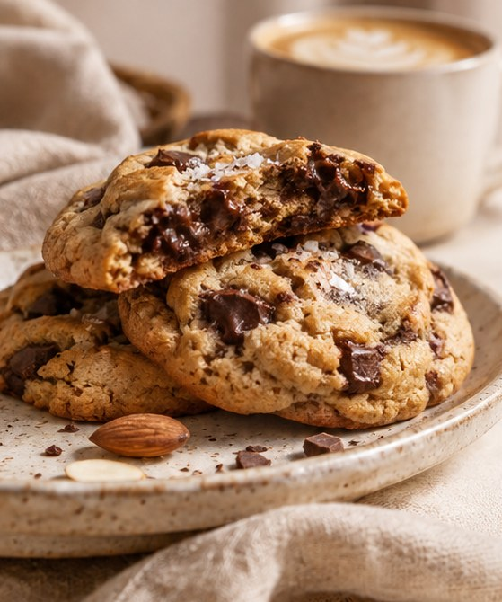

THE BLUE LOAF EDIT · 01
UNA RECETA EXCLUSIVA PARA TI
The Soft
Cookie Edit.
Hay pequeños placeres que merecen su propio momento. Descubre nuestras galletas suaves de almendra, vainilla y chocolate oscuro, una receta pensada para disfrutar sin renunciar al sabor.
ALMENDRAVAINILLACHOCOLATE OSCURO
A LITTLE SOMETHING FOR YOU
La receta es tuya.
Déjanos tu nombre y correo para recibir nuestro recetario y descubrir un beneficio especial para Founders Club.
Después de registrarte, revisa tu correo y confirma tu dirección para recibir la receta.MADE WITH INTENTION.